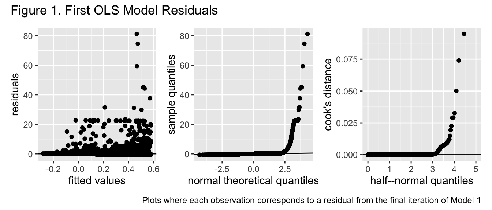
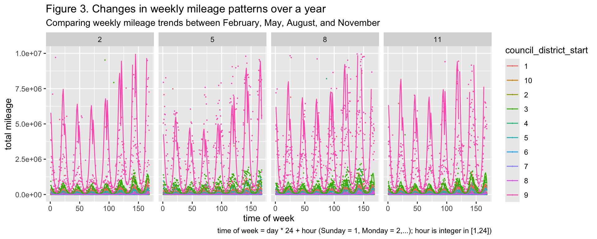
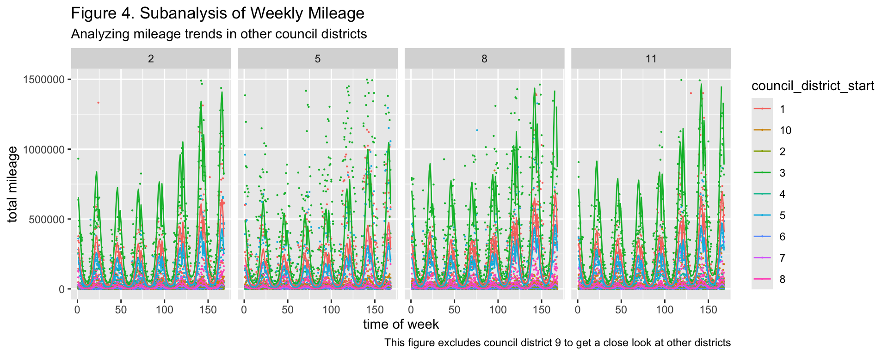
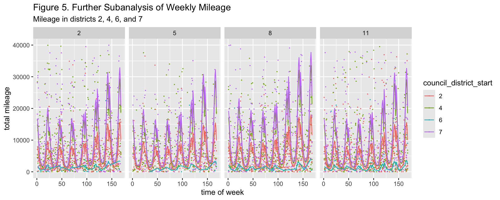

Public Micromobile Vehicle Usage in Austin, Texas
I. Introduction
Austin, Texas is among numerous American cities to adopt micromobility vehicles as public, city-maintained transport in the last decade. Their widespread usage in cities has become increasingly acknowledged to provide many benefits to the cities they reside in, among them being helping cities to decrease carbon emissions (Zhang, 2024) and being an easily implementable form of public transport in areas underserved by traditional public transport (Zaheen, 2025). That said, the dock-less nature of these vehicles and their shorter longevity relative to larger and more prevalent forms of public transport presents its own set of operational challenges for cities. There are two challenges in particular: their shorter longevity means less mileage is required before they need repair and the complete lack of docks in which to park them makes it more difficult to ensure they’re equitably distributed across neighborhoods. An increased understanding of their usage, however, could allow cities to more readily anticipate the onset of these challenges and enable them to respond in a timely and cost effective manner. This project attempts to increase said understanding of public micromobility usage in Austin, Texas, where a robust and widespread public microbility transit program has been ongoing for several year. Quantile regression analysis of public micromobile vehicle mileage given other factors is an especially straightforward and promising avenue to better understanding micromobile vehicle usage in Austin, Texas.
Median regression consists of estimating the parameters of a linear regression model such that they minimize the sum of the absolute residuals. Although quantile regression, which is also known as median regression, doesn’t possess the computational simplicity and straightforward geometric properties of ordinary least squares, it has its own advantages over ordinary least squares. For example, accurate estimation and uncertainty quantification of median regression parameters doesn’t require any distributional assumptions about the errors surrounding the mean function of the response variable, whereas accurate estimation and uncertainty quantification of ordinary least squares parameters do. Median regression is particularly useful when errors appear to originate from a heavy-tailed distribution, where outliers are more likely to be present in the data and bias estimation of the mean function parameters. The ability to produce standard error values for its parameter estimates also makes it more suitable for inference in situations where traditional ordinary least squares is not.
In order to analyze public micrombile vehicle usage in Austin, Texas, this project looks at mass micromobile vehicle mileage in Austin across different times, month, and council districts from 2018-2022. Micromobile vehicle mileage is then regressed on council district and different time parameters through median regression. The resulting approximations of micromobile vehicle mileage across given district location, month, day, and time allow for both inference about the significance of aforementioned predictor variables in determining micromobile vehicle mileage and analysis of micromobile vehicle trends over different time periods and neighborhoods in Austin, Texas. Inference is done through the standard error bounds estimated under median regression.
II. Regression Theory
I. Problem Set Up
Let \(y \in \mathbb{R}^n\) be a random vector and \(X\) be a fixed matrix with \(n \in \mathbb{R}\) rows and \(p+1 \in \mathbb{R}\) columns. Now let \(\beta \in \mathbb{R}^{p+1}\) be fixed and \(\epsilon \in \mathbb{R}^n\) be a random vector. Each row in \(X\), \(y\), and \(\epsilon\) corresponds to the same observation, and \(p\) represents the number of variables we are interested in using to predict scalar values of \(y\). Columns \(2, 3, ..., p+1\) in \(X\) correspond to each of the predictor variables we are interested in using, and rows \(2,3,...,n\) in \(\beta\) correspond to fixed parameter values associated with each of these \(p\) predictor variables. Column \(1\) of \(X\) and row \(1\) of \(\beta\) correspond to a \(n\) vector of \(1\)’s and the parameter value associated with them respectively. We wish to define a linear function for \(y\) given \(p\) other already realized variables, and we wish to do this using \(X\), \(\beta\), and \(\epsilon\) respectively. More specifically, we assume \(y = X\beta + \epsilon\) defines potential values of \(y\) given an already known \(X\) and that \(X \beta\) is the most likely value of \(y\) given \(X\).
II. Ordinary Least Squares
Under ordinary least squares, \(\epsilon\) has mean \(0\) and covariance matrix \(diag(\sigma^2, \sigma^2...,\sigma^2)\). Subsequently, the most likely value of \(y\) given \(X\) is defined as \(E(y|X) = E(X \beta + \epsilon) = X\beta\). Now let \(y_n \in \mathbb{R}^n\) be an already realized sample from the distribution of \(y\) that has been collected alongside \(X\), meaning each row in \(y_n\) and \(X\) pertain to the same observation, and let \(\hat{y} \in \mathbb{R}^n\) be an estimate of \(E(y|X)\) and \(\hat{\beta} \in \mathbb{R}^{p+1}\) be an estimate of \(\beta\). Then the \(\hat{\beta}\) that best approximates \(\beta\) under the conditions of ordinary least squares is \(\underset{\hat{\beta}}{\operatorname{arg min}} (y_n - X \hat{\beta})^T(y_n - X\hat{\beta})\). Ordinary least squares is convenient to use because this minimization problem has the relatively straightforward solution of \(\underset{\hat{\beta}}{\operatorname{arg min}} (y_n - X \hat{\beta})^T(y_n - X\hat{\beta}) = (X^{T}X)^{-1}X^{T}y_n\). Furthermore, of all unbiased estimators of \(\beta\), \(\hat{\beta}\) has the least variance and thus the most narrow uncertainty quantification of possible values of \(\beta\) among all unbiased estimators; however, in order for this estimation and uncertainty quantification to be accurate, all \(\epsilon_i\) in \(\epsilon\) must maintain constant variance over all values of \(X\), have a mean of \(0\), and be independently, identically distributed. The violation of any of these assumptions can jeopardize the reliability of ordinary least squares estimates and uncertainty quantification.
III. Median Regression
Median regression, however, requires no assumptions about the distribution of \(\epsilon\) to maintain its level of accuracy. The most likely value of \(y\) given \(X\) under median regression is the median of \(y\) given \(X\), which is defined as the fixed and minimum \(X\beta\) such that \(F_{y|X}(X\beta) = .5\). \(\hat{\beta} = \underset{\hat{\beta}}{\operatorname{arg min}} \sum_{i=1}^{n} |y_{ni} - x_i^T \hat{\beta}|\) is the estimate that best approximates \(\beta\) under these conditions, with \(y_{ni}\) being the scalar from row \(i\) in \(y_n\) and \(x_i \in \mathbb{R}^{p+1}\) corresponding to row \(i\) in \(X\). Unlike ordinary least squares, there is no straightforward analytical solution to this minimization problem, which makes it more difficult to interpret than the ordinary least squares solution. That said, its lack of any assumptions on the distribution of \(\epsilon\) makes it considerably more reliable than traditional ordinary least squares when it is likely that \(\epsilon\) originates from a heavy tailed distribution. This is because \(\epsilon\) originating from a heavy tailed distribution implies that outliers are more likely to be present in the sample of data used to estimate \(\hat{\beta}\). More precisely, ordinary least squares is very sensitive to outliers due to it estimating parameters for a “mean function”, whereas the general robustness of median estimates to outliers makes the manner in which median regression estimates parameters insensitive to outliers. Median regression is thus better suited than ordinary least squares to estimating the most likely value of \(y\) given \(X\).
III. Methods
In order to assess a linear model between the response variable variable of interest and the predictor variables chosen for it, two ordinary least squares models of their relationship were created and optimized. In order to calculate the first model, the response variable of interest was scaled using its mean as the center and its standard deviation as its scale. This was in order to ensure both the response variable and predictor variable were approximately of the same magnitude and, thus, decrease the chance of numeric instability in estimation of \(\hat{\beta}\). This ordinary least squares model was then optimized using p-value based backward elimination to remove polynomial transformations of some of the variables of interest. Once this model was optimized, it was assessed to see if any model assumptions were violated through a combination of graphs and hypothesis tests. More specifically, the absolute residuals were regressed onto the fitted values calculated from the model to see if the \(\hat{\beta}\) parameter corresponding to the fitted values was significant and the residuals were regressed onto an order 2 polynomial transformation of the fitted values to see if the parameter corresponding to the second degree transformation of the fitted values was significant. A graph plotting the theoretical quantiles of the residuals under a normal distribution to their actual quantile values was also used to see whether they were normally distributed around 0 and to get an idea of whether the distribution of the errors was heavy tailed or not. In order to ensure specific points were not skewing any of the OLS results, Cook’s distance was calculated for each of the observations and plotted on a half-normal plot to see whether any observations significantly diverged from the rest.
The untransformed version of the response variable was then regressed onto the same exact predictor variables and transformed predictor variables chosen for the first model, and the Box Cox method was used to determine an ideal transformation for the response variable. Since the 95% confidence interval of optimal transformation values did not encompass 1, the response variable was transformed using a rounded version of the optimal transformation determined by Box Cox. The rounding was done in order to improve interpretability of the model. This transformed response variable was then regressed onto the exact same predictor variables used for the model that regressed on the unchanged response variable, and went through the same process of assumption checking and influential point detection used on the model involving the scaled response variable.
Once this process unveiled the violation of significant OLS assumptions, the Box Cox transformed version of the response variable was regressed onto the same predictor variables and transformed predictor variables chosen for the previous model, except this time median regression was used. The p-values corresponding to each of the predictor variable parameters was then used to determine the significance of different predictor variables and predictor variable transformations in predicting values of the transformed response value. Fitted response values for each of the observations were calculated by performing an inverse transformation of the Box Cox transformation on the fitted transformation response values calculated by the model. These fitted response values were then plotted alongside the observed response values and their predictor variables to assess trends in the data and visually inspect the fit of the model.
IV. Analysis of Micromobile Vehicle Usage in Austin, Texas
I. Research Introduction
The data used for this project was queried from a public micromobile trip database owned by the government of Austin, Texas. More precisely, database observations consist of registered trips on publicly owned micromobile vehicles from 2018 to 2021 (Austin, 2022). A new dataset to analyze was created from this query. Each observation corresponds to a specific Austin council district at a specific time block. Said time block is a specific day of the week (Sunday, Monday, etc.) at a specific hour, from a specific month and year. It is important to note that each observation represents all occurrences of a specific hour-day combination throughout a specific month in a specific year. For example, an observation with 9 as the council district, 1 as the hour, Monday as the day, January as the month, and 2021 as the year corresponds to council district 9 throughout 4 separate time blocks if January of 2021 happened to have Monday occur 4 times. The sum of all trip distances that originated from a specific council district and began in a specific hour-day time block throughout a specific month in a specific year is the response variable and all other units of time and location mentioned above, except for year, are predictor variables. In other words, this analysis regresses the overall distance traveled by micromobile vehicles in a specific council district and set of time blocks onto the council district the trip originated from, the hour when the trip began, the day it occurred, and the month it occurred. Since hour, day of the week, and month are variables corresponding to time, they are represented as numeric, discrete values, although regression analysis will treat them as continuous. The council district variable is treated as a factor with 10 levels in this analysis, and the response variable of trip distance is treated as a continuous value. For more information about how the variables were coded, check the appendix.
Let \(i\) represent a specific observation from the sample used for this analysis, \(y_i\) represent sum of trip distance, \(x_{ih}\) represent hour, \(x_{id}\) represent day of the week, \(x_{im}\) represent month, and \(x_{i2},x_{i3},...,x_{i,10}\) correspond to dummy variables indicating whether a specific observation corresponds to a specific council district. Then this analysis aims to estimate \(\beta_1, \beta_2,...,\beta_{12}\) such that the following is true of \(\hat{y_i}\), the most likely value of \(y\) given \(x_i\): \(\hat{y_i} = \beta_0 + \sum_{k = 1}^{p}x_{ik}^{T}\beta_{k}\). Note that although the response variable, dummy variables and their corresponding parameters are all scalars and the modelling process began with all parameter predictor terms being scalars, the time terms and their corresponding parameter terms eventually became column vectors with a dimensionality equivalent to the number of polynomial transformations they had undergone by the end of the modelling process.
These are the main questions this analysis aims to address:
- Do certain council districts make more use of public micromobile vehicles than other council districts? If so, which ones make more use of them and to what extent?
- How does public micromobile usage change throughout periods of time? Are there any patterns in how they change throughout hours, days, weeks, and months?
- Do different council districts’ usage of public micromobile vehicles interact with time in unique ways, or do they interact with time in the same manner?
II. Modelling Process
At the start of the modelling process, observations with response values of 0 were removed from the sample. This is because a trip distance of 0 meters was significantly likely to be false considering all observations were based on registered trips. Fortunately, these accounted for approximately .7% of all observations, so the influence of these removals on model estimates is most likely small. The response variable was then scaled and regressed on all the predictor variables mentioned above. None of them were transformed for this initial regression and ordinary least squares was used. Both the hypothesis tests involving the residuals and fitted values had p-values less than 2e-16, so it appeared neither homoscedasticity or a constant mean of \(0\) for \(\epsilon\) was met under this model. All the predictor variables associated with time were then transformed to degree six polynomials and backward p-value elimination was used to remove polynomial transformations. Even with this optimization, both of the hypothesis test results still had p-values less than 2e-16 and the adjusted R-squared value was approximately .02, suggesting both that the lack of a constant mean 0 in the function could not be explained by nonlinearity and that this model was not a good fit for the data.
Based on the manner in which the residuals skew more to the tops of their graphs in the first two plots of figure 1, even the errors under an optimal model that was estimated using response and predictor values of the same magnitude are heavy tailed and skew more to one side. Furthermore, the low value of the Cook’s distance values suggests that this is a trend in the errors as opposed to being caused by any specific point. Since the ordinary least squares model assumptions of errors having constant variance and mean 0 still do not appear to be met, estimates of the parameters and uncertainty quantification of them under this model is unreliable and unlikely to closely approximate the actual value of \(\beta\).
A Cox Box transformation given an ordinary least squares model was subsequently performed on an untransformed response variable, with predictor variables being dummy variables corresponding to council districts and the transformed time predictor variables from the first model. More specifically, predictor variables day of week and month received transformations such that for predictor variable \(x\) and transformation \(g(.)\), \(g(x) = \sum^{5}_{a=1}x^a\), while the predictor variable hour underwent a transformation such that \(g(x) = \sum^{4}_{a=1}x^a\). The corresponding optimal Box Cox transformation of this model was approximately \(-0.02020202\), which was rounded to \(-.02 = \frac{-1}{50}\) for increased interpretability. This transformation was applied to the response variable and another ordinary least squares model involving this transformed response variable and the previously specified predictor values was calculated.

Although the errors under this model appear to have more consistent variance over different predictor values than the errors under the first model did, their behavior in the first plot of figure 2 is still erratic and inconsistent with constant variance around a constant mean of 0. Furthermore, comparing the sample quantile of the residuals to their theoretical quantiles under a normal distribution suggests the errors originate from a much more heavy tailed distribution. Given the low value of all the Cook’s distance values, this once again cannot be attributed to any one specific exerting high influence over the results of the model. We once again see that the ordinary least squares model assumptions of errors having constant variance and mean 0 do not appear to be met even when the response variable has undergone Box Cox transformation. Subsequently, estimates of the parameters and uncertainty quantification of them under this model is unreliable and unlikely to closely approximate the actual value of \(\beta\).
With the establishment that the errors for the response value most likely originate from a heavy tailed distribution that OLS is not suited for, median regression was used to calculate the parameter values. All of the predictor and response variable transformations used in the final iteration of the second OLS model were also used in the median regression model, including the Box Cox transformation. All of the same predictor and response variables were also used to calculate the parameters under median regression. Due to the robustness of median regression to extreme points and its lack of any distributional assumptions on errors in order to accurately estimate and quantify uncertainty surrounding parameters, the results it gives in this scenario are reliable. Furthermore, all the one-parameter hypothesis tests performed on each of the parameters registered as extremely significant, with the largest p-value being 4.93e-05. The final model, as determined by median regression, that was used to analyze trends in the data is \[\frac{1}{\hat{y_i}^{1/50}} = \hat{\beta}_0 + x_{ih}^T \hat{\beta}_h + x_{im}^T \hat{\beta}_m + x_{id}^T \hat{\beta}_d + x_{ic}^T \hat{\beta}_c\] where \(x_{ih}\), \(x_{im}\), and \(x_{id}\) are column vectors of dimensions 4, 5, and 5 respectively for which the term in the \(k\)th row is the original untransformed variable to the \(k\)th degree. \(x_{ic}\) is a column vector of dimension 9 where the term in the \(k\)th row is the dummy variable corresponding to council district \(k+1\). All of the \(\hat{\beta}_j\) terms that the transposes of the variable columns are multiplied by are also column vectors of the same degree as \(x_j\), wherein the real-valued scalar in the \(k\)th row of \(\hat{\beta}_j\) is the linear parameter estimate corresponding to the variable in the \(k\)th row of \(x_j\). The specific values of each parameter can be found in the appendix.
III. Results
By applying an inverse function of the Box Cox transformation to the fitted values calculated by the model, the fitted values of the original response variable were obtained and subsequently plotted alongside the predictor variables.

Based on figure 3, people in council district 9 of Austin use public micromobile vehicles substantially more than people in any of the other council districts. Maintenance of both public micromobile vehicle ability to operate and their population size within a specific district is thus most necessary in council district 9 through all times of the week and year.


Figures 4, 5, and 6 suggest that there are consistent patterns in public micromobile usage throughout the week, with the middle of the week appearing to receive less usage than other days of the week and the very early hours of the morning receiving the least usage. From visual inspection, all council district usage of vehicles changes depending on the season, with this change being more pronounced in council districts that are not 9. Both the significant variation between the lines of best fit for each council district and the p-values of the hypothesis tests performed on each dummy variable also suggest that the extent to which micromobile vehicles are used is dependent on the council district where people find them. Time also does not appear to interact with any particular council district in a unique manner.
V. Conclusion
This analysis has limitations that undoubtedly impacted the results shown. First, it is very possible that the errors in this data are correlated to each other through time. A model that assumed correlation between errors through time might have been better at accurately modeling public micromobile usage. It is also possible that errors were correlated by geographic location, as some council districts are closer to each other than they are to others. Median regression was chosen over a model that considered these posssible correlation structures to simplify the modelling process.
There are potential avenues further analysis of this data could take. Although all dummy variables were significant, that only signifies that usage of micromobile vehicles between district 1 and a district represented by a dummy variable is different. Further pairwise comparison between other pairs of council districts could yield further insights into how micromobile vehicle usage is different among them. This data could also be paired with demographic variables corresponding to each of the council districts to narrow down possible reasons for these geographic differences in public micromobile vehicle usage.
VI. Works Cited
City of Austin, Texas - data.austintexas.gov. “Shared Micromobility Vehicle Trips (2018-2022): Open Data: City of Austin, Texas.” Data.AustinTexas.Gov - The Official City of Austin Open Data Portal, 5 Apr. 2022, data.austintexas.gov/Transportation-and-Mobility/Shared-Micromobility-Vehicle-Trips-2018-2022-/7d8e-dm7r/about_data.
Zaheen, Saima, et al. “Systematic Micromobility Planning to Promote Public Transit Use in Underserved Communities: A Case Study.” Journal of Transport and Sustainability, Dec. 2025, pp. 1–16. https://doi.org/10.1108/jtas-07-2025-0043.
Zhang, Yongping, et al. “A Comparative Analysis of the Potential of Carbon Emission Reductions From Shared Micro-mobility.” Sustainable Energy Technologies and Assessments, vol. 72, Nov. 2024, p. 104088. https://doi.org/10.1016/j.seta.2024.104088.
VII. Appendix
I. Variables
| Variables | Type1 | Type2 | Description | Coding |
|---|---|---|---|---|
| total distance | target | continuous | the total distance in meters travelled by all public micromobile vehicle trips across all day-hour times frame in a specific district-month-year trio | represented as a positive real value |
| council district | predictor | factor | the Austin, Texas, council district where all trips that contributed to the total distance began | numeric value corresponding to the ten council districts in Austin, Texas, ie Council District 1 is represented as 1, Council District 2 is represented as 2, and so on. There are 10 council districts |
| day | predictor | discrete numeric | a day of the week | Sunday = 1, Monday = 2, Tuesday = 3, Wednesday = 4, Thursday = 5, Friday = 6, Saturday = 7 |
| month | predictor | discrete numeric | a specific month in a year | January = 1, February = 2, March = 3, April = 4, May = 5, June = 6, July = 7, August = 8, September = 9, October = 10, November = 11, December = 12 |
| year | predictor | discrete numeric | a specific year | The following are all the unique values in this variable: 2018, 2019, 2020, 2021, 2022 |
| hour | predictor | discrete numeric | a specific hour in a day | 12:00am-1:00am is represented as 1, 1:00am-2:00am is represented as 2,..., 11:00pm-12:00am is represented as 24 |
II. Regression Coefficients
| Value | Std. Error | t value | Pr(>|t|) | |
|---|---|---|---|---|
| (Intercept) | 0.7912942 | 0.0002116 | 3740.311194 | 0.00e+00 |
| council_district_start10 | 0.0385200 | 0.0003788 | 101.698043 | 0.00e+00 |
| council_district_start2 | 0.0570368 | 0.0004861 | 117.325428 | 0.00e+00 |
| council_district_start3 | -0.0119308 | 0.0002789 | -42.776047 | 0.00e+00 |
| council_district_start4 | 0.0469054 | 0.0003962 | 118.399341 | 0.00e+00 |
| council_district_start5 | 0.0050926 | 0.0002850 | 17.866347 | 0.00e+00 |
| council_district_start6 | 0.0815815 | 0.0016796 | 48.572469 | 0.00e+00 |
| council_district_start7 | 0.0450063 | 0.0004883 | 92.167776 | 0.00e+00 |
| council_district_start8 | 0.0329335 | 0.0003800 | 86.658579 | 0.00e+00 |
| council_district_start9 | -0.0410775 | 0.0002872 | -143.023840 | 0.00e+00 |
| poly(day_of_week, 5)1 | -0.8608221 | 0.0204821 | -42.028101 | 0.00e+00 |
| poly(day_of_week, 5)2 | -0.4885173 | 0.0207928 | -23.494556 | 0.00e+00 |
| poly(day_of_week, 5)3 | 0.2676737 | 0.0205435 | 13.029607 | 0.00e+00 |
| poly(day_of_week, 5)4 | 0.1283341 | 0.0204835 | 6.265255 | 0.00e+00 |
| poly(day_of_week, 5)5 | 0.0833539 | 0.0205336 | 4.059398 | 4.93e-05 |
| poly(hour, 4)1 | -0.8101374 | 0.0188676 | -42.937983 | 0.00e+00 |
| poly(hour, 4)2 | -2.8126603 | 0.0213178 | -131.939533 | 0.00e+00 |
| poly(hour, 4)3 | 0.9865457 | 0.0204102 | 48.335956 | 0.00e+00 |
| poly(hour, 4)4 | 1.1648325 | 0.0204417 | 56.983033 | 0.00e+00 |
| poly(month, 5)1 | -0.1439795 | 0.0210141 | -6.851566 | 0.00e+00 |
| poly(month, 5)2 | 0.4123752 | 0.0206998 | 19.921716 | 0.00e+00 |
| poly(month, 5)3 | 0.0853248 | 0.0209906 | 4.064903 | 4.81e-05 |
| poly(month, 5)4 | 0.2952864 | 0.0209131 | 14.119702 | 0.00e+00 |
| poly(month, 5)5 | -0.1363457 | 0.0208550 | -6.537797 | 0.00e+00 |